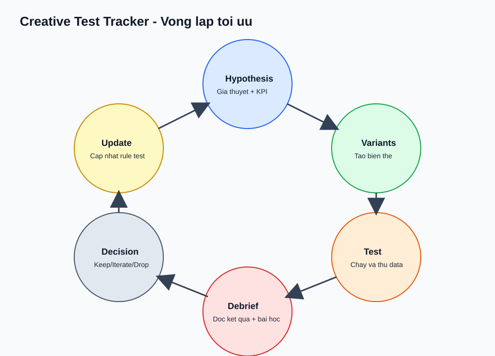

Giao diện lấy cảm hứng từ Coursera
Marketer → Vibe Coding: học theo trụ, làm ra kết quả
Khóa học 12 tuần đã được tối ưu để học trực tiếp trên web: bài học đầy đủ, tình huống nhỏ có số liệu, bài tập thực hành và sản phẩm bàn giao rõ ràng theo từng tuần.
Tổng quan khóa học
3 Trụ Cột Cố Định
Tư duy (Tuần 1-3)
Tư duy hệ thống, kiểm thử nhanh, phân vai Con người × AI để tối ưu đúng chỗ.
Kỹ năng (Tuần 4-8)
Phân rã bài toán, prompt thực dụng, QA, đo lường, tổng kết hằng tuần.
Công cụ (Tuần 9-12)
Dựng bộ công cụ và triển khai 3 dự án mini chạy thật.
Lộ trình học
Kết quả bạn sẽ đạt được
Tốc độ sản xuất
Rút ngắn thời gian ra bản nháp, tăng tỷ lệ xuất bản đúng lịch.
Chất lượng đầu ra
Giảm lỗi nội dung và cải thiện tính nhất quán qua vòng QA.
Hệ thống vận hành
Dựng được 3 dự án mini có đo lường để đưa vào hồ sơ dự án.
W1 Bản đồ hệ thốngW2 Tư duy thử nghiệmW3 Phân vai AIW4 Thiết kế brief
W5 Vận hành promptW6 Vòng QAW7 KPI nềnW8 Tổng kết tuần
W9 Dựng bộ công cụW10 Cỗ máy nội dungW11 Theo dõi ý tưởngW12 Nuôi dưỡng khách hàng tiềm năng
Syllabus
Mô-đun theo tuần
Mỗi tuần gồm mục tiêu, các bước thực hiện, tình huống nhỏ có số liệu, bài tập và KPI đánh giá. Bạn có thể mở phiên bản bài dài của từng tuần qua các nút W1-W12 Blog chi tiết ngay trong từng trụ.
Không tìm thấy mô-đun phù hợp
Thử từ khóa khác như W10, KPI, QA hoặc nuôi dưỡng.
Trụ 1
Tư duy
Chuẩn bị (Tuần 0) — Khởi động nhanh
- Tạo Google Sheets
VibeMarketing_CourseHubvới 4 tab:Workflow_Current,Hypothesis_Backlog,Prompt_Library,KPI_Baseline. - Tạo thư mục Google Drive
VibeCoding-Marketing. - Tạo tài khoản Make/Zapier và tạo bảng điều khiển Looker Studio kết nối Google Sheets.
KPI nền: Thời gian ra bản nháp đầu tiên, độ ổn định xuất bản tuần, chỉ số chuyển đổi thay thế.
W1 Tư duy hệ thống marketing · ~18 phút
Mục tiêu
Biến marketing từ danh sách việc rời rạc thành chuỗi vận hành có đầu vào/đầu ra.
Khái niệm cốt lõi
- Luồng = Đầu vào → Xử lý → Đầu ra → Phản hồi.
- Tối ưu sai điểm nghẽn = phí thời gian.
- Đo thời gian thực tế, không ước lượng.
Vì sao quan trọng
Khi chưa nhìn thấy dòng chảy, bạn thường tối ưu tiểu tiết thay vì sửa lỗi hệ thống.
Các bước
- Liệt kê 1 quy trình marketing thật (ví dụ: nội dung tuần).
- Vẽ 5 bước: đầu vào → ý tưởng → bản nháp → rà soát → xuất bản.
- Ghi thời gian thực tế từng bước.
- Đánh dấu nút thắt: T (tốn thời gian), E (dễ sai), R (lặp lại cao).
Tình huống nhỏ + số liệu
| Bước | Thời gian cũ | Phát hiện |
|---|---|---|
| Ý tưởng | 90 phút | Rất lặp lại |
| Bản nháp | 150 phút | Dễ sai cấu trúc |
| Rà soát | 60 phút | Thiếu checklist |
Kết luận: nút thắt chính nằm ở Ý tưởng + Bản nháp, cần chuẩn hóa prompt và QA.
Ví dụ đầu ra
Đầu vào: brief tuần -> Xử lý: 5 bước -> Đầu ra: 6 bài đăng Nút thắt: Ý tưởng (T,R), Bản nháp (E) Hành động: xây prompt + QA checklist
Bài tập
Tạo bản đồ luồng + 5 nút thắt ưu tiên.
Sản phẩm bàn giao
Bản đồ luồng + danh sách nút thắt có tag T/E/R.
KPI/Thang đo
Thang đo: 0 (chỉ liệt kê việc), 1 (có luồng), 2 (đủ luồng + thời gian + nút thắt).
Lỗi thường gặp
- Đánh dấu nút thắt theo cảm tính, không đo thời gian.
- Thiếu bước phản hồi nên không thấy lỗi lặp lại.
W2 Tư duy thử nghiệm nhanh · ~20 phút
Mục tiêu
Ra quyết định bằng kiểm thử nhỏ có KPI thay vì cảm tính.
Khái niệm cốt lõi
- Giả thuyết luôn đi kèm chỉ số và điều kiện thắng/thua.
- Kiểm thử nhỏ giúp giảm rủi ro.
- Chọn giả thuyết theo Tác động × Dễ làm × Tốc độ.
Vì sao quan trọng
Không có kiểm thử nhỏ, bạn thường “đốt” ngân sách vào quyết định thiếu bằng chứng.
Các bước
- Viết 10 giả thuyết (thông điệp/định dạng/CTA).
- Chấm điểm Tác động × Dễ làm × Tốc độ.
- Chọn 3 giả thuyết ưu tiên.
- Đặt quy tắc: mở rộng / cải tiến / bỏ.
Tình huống nhỏ + số liệu
| Giả thuyết | KPI mục tiêu | Kết quả |
|---|---|---|
| Câu mở đầu dạng “dữ liệu dẫn dắt” | CTR ≥ 2.5% | 3.1% (mở rộng) |
| CTA “DM nhận mẫu” | Số khách hàng tiềm năng ≥ 25 | 18 (cải tiến) |
| Định dạng carousel | Lưu ≥ 120 | 60 (bỏ) |
Ví dụ đầu ra
Giả thuyết: “Câu mở đầu dữ liệu tăng CTR” Kiểm thử: 2 biến thể câu mở đầu KPI: CTR >= 2.5% Quyết định: >=2.5% mở rộng, 2.0-2.49 cải tiến, <2.0 bỏ
Bài tập
Tạo danh sách 10 giả thuyết và chọn 3 kiểm thử ưu tiên.
Sản phẩm bàn giao
Danh sách giả thuyết + bảng chấm điểm.
KPI/Thang đo
Đủ chỉ số, ngưỡng và quy tắc hành động.
Lỗi thường gặp
- Chạy kiểm thử nhưng không đặt KPI trước.
- Không có quy tắc nên khó ra quyết định.
W3 Ranh giới quyết định giữa người và AI · ~18 phút
Mục tiêu
Rõ việc AI làm chính, việc con người giữ quyền quyết định.
Khái niệm cốt lõi
- AI mạnh ở tốc độ và biến thể.
- Con người giữ trách nhiệm thương hiệu và rủi ro pháp lý.
- Công việc lặp lại + rủi ro thấp = AI chính.
Vì sao quan trọng
Không phân vai rõ, AI dễ tạo sai lệch thương hiệu và tốn thời gian sửa.
Các bước
- Lấy 20 công việc lặp lại.
- Chia 4 nhóm: AI chính, AI hỗ trợ, Con người chính, không tự động hóa.
- Chọn 3 việc thí điểm tự động hóa.

Tình huống nhỏ + số liệu
| Công việc | Phân vai | Giảm thời gian |
|---|---|---|
| Tạo 5 biến thể tiêu đề | AI chính | ‑40% |
| Viết thông điệp thương hiệu | Con người chính | 0% |
| Tổng hợp thông tin khảo sát | AI hỗ trợ | ‑30% |
Ví dụ đầu ra
AI chính: tạo biến thể, gợi ý hướng tiếp cận Con người chính: chọn hướng cuối, duyệt tuyên bố
Bài tập
Tạo ma trận Con người vs AI và chọn 3 việc thí điểm tự động hóa.
Sản phẩm bàn giao
Ma trận phân vai con người và AI.
KPI/Thang đo
≥ 30% công việc lặp lại nằm trong nhóm có thể tự động hóa.
Lỗi thường gặp
- Giao AI toàn bộ phần quyết định thương hiệu.
- Bỏ qua bước QA cuối cùng của con người.
Trụ 2
Kỹ năng
W4 Phân rã bài toán → Brief · ~22 phút
Mục tiêu
Biến yêu cầu mơ hồ thành brief có thể giao việc và đo kết quả.
Khái niệm cốt lõi
- Brief 1 trang giúp giảm vòng sửa.
- Mọi đầu ra phải có định dạng và tiêu chí chất lượng.
Vì sao quan trọng
Không có brief chuẩn, AI hoặc nhóm sẽ tạo đầu ra lệch mục tiêu.
Các bước
- Xác định Vấn đề, Đối tượng, Đầu vào, Định dạng đầu ra.
- Thêm ràng buộc (thương hiệu/pháp lý) và KPI.
- Kiểm tra đủ dữ liệu đầu vào.
Tình huống nhỏ + số liệu
| Trước | Sau | Tác động |
|---|---|---|
| 3 vòng sửa/bài | 1 vòng sửa/bài | ‑66% làm lại |
| Thời gian brief 10 phút | 25 phút | +15 phút thiết lập |
Ví dụ đầu ra
Định dạng đầu ra: 1 post LinkedIn (120-180 chữ) Chuẩn chất lượng: nêu 1 vấn đề + 1 bằng chứng + CTA KPI: CTR >= 2.5%
Bài tập
Chuyển 3 việc hiện tại thành 3 brief chuẩn.
Sản phẩm bàn giao
3 brief theo mẫu.
KPI/Thang đo
3/3 brief có định dạng đầu ra + tiêu chí đạt/không đạt.
Lỗi thường gặp
- Thiếu ràng buộc giọng thương hiệu.
- Không định nghĩa KPI nên khó đánh giá.
W5 Thiết kế prompt để nhất quán · ~20 phút
Mục tiêu
Viết prompt có cấu trúc để đầu ra ổn định, giảm thử sai.
Khái niệm cốt lõi
- Đặt chỉ dẫn trước, tách bối cảnh rõ ràng.
- Chỉ định định dạng đầu ra, độ dài, phong cách.
- Tinh chỉnh prompt theo kết quả thực tế.
Vì sao quan trọng
Prompt mơ hồ khiến đầu ra lệch chuẩn và tốn thời gian chỉnh sửa.
Các bước
- Vai trò + Bối cảnh + Nhiệm vụ + Ràng buộc + Định dạng đầu ra.
- Đưa ví dụ mẫu nếu cần.
- Lưu prompt tốt vào thư viện.
Tình huống nhỏ + số liệu
| Prompt | Thời gian ra bản nháp | Đạt QA |
|---|---|---|
| Mơ hồ | 35 phút | 40% |
| Có cấu trúc | 18 phút | 80% |
Ví dụ đầu ra
Vai trò: Growth Marketer Nhiệm vụ: Viết 1 post LinkedIn Ràng buộc: 120-160 chữ, giọng phân tích Đầu ra: 1 câu mở đầu + 3 gạch đầu dòng + CTA
Bài tập
Tạo 20 prompt theo 4 nhóm: nghiên cứu, nội dung, quảng cáo, CRM.
Sản phẩm bàn giao
Thư viện prompt (Google Sheets + markdown).
KPI/Thang đo
Thời gian ra bản nháp đầu tiên < 20 phút/việc.
Lỗi thường gặp
- Thiếu định dạng đầu ra nên khó QA.
- Không lưu prompt tốt, phải viết lại từ đầu.
W6 Vòng QA cho đầu ra AI · ~19 phút
Mục tiêu
Xây checklist QA để giảm lỗi logic/nội dung trước khi xuất bản.
Khái niệm cốt lõi
- QA là bước bắt buộc, không phụ thuộc cảm tính.
- Checklist giúp giảm lỗi lặp lại.
Vì sao quan trọng
Không QA dẫn đến sai giọng thương hiệu hoặc tuyên bố sai dữ kiện.
Các bước
- Tạo checklist 5 điểm: dữ liệu, giọng thương hiệu, CTA, tuân thủ, định dạng.
- Chấm đạt/không đạt cho từng đầu ra.
- Tinh chỉnh prompt nếu tỷ lệ lỗi > 30%.
Tình huống nhỏ + số liệu
| Trước QA | Sau QA | Tác động |
|---|---|---|
| 60% lỗi | 20% lỗi | ‑40% lỗi |
| 2 vòng sửa | 1 vòng sửa | ‑50% làm lại |
Ví dụ đầu ra
QA checklist: Dữ liệu OK / Giọng OK / CTA OK / Tuân thủ OK / Định dạng OK Kết quả: ĐẠT
Bài tập
QA 5 đầu ra AI và ghi % lỗi trước/sau.
Sản phẩm bàn giao
Checklist QA + nhật ký lỗi phổ biến.
KPI/Thang đo
Giảm lỗi sửa tay ≥ 40%.
Lỗi thường gặp
- Checklist quá dài, khó áp dụng.
- Không thống kê lỗi nên không cải tiến được.
W7 Đo lường nền & chênh lệch · ~18 phút
Mục tiêu
Chứng minh hiệu quả AI/tự động hóa bằng số liệu trước/sau.
Khái niệm cốt lõi
- Nền trước khi cải tiến.
- Chênh lệch = (Sau - Trước) / Trước.
- Đo ít nhưng đúng: tốc độ, tính ổn định, kết quả.
Vì sao quan trọng
Nếu không đo, bạn không biết việc cải tiến thật sự có tác động.
Các bước
- Chọn 3 KPI cốt lõi.
- Ghi nền 2 tuần.
- So sánh chênh lệch sau khi áp dụng luồng.
Tình huống nhỏ + số liệu
| KPI | Trước | Sau | Chênh lệch |
|---|---|---|---|
| Thời gian ra bản nháp | 35 phút | 18 phút | ‑48% |
| Xuất bản đúng lịch | 60% | 85% | +25pt |
Ví dụ đầu ra
Nền: 35m/bản nháp Sau: 18m/bản nháp Chênh lệch: -48%
Bài tập
Tạo bảng điều khiển nền + tuần chênh lệch.
Sản phẩm bàn giao
Bảng điều khiển KPI (Google Sheets hoặc Looker Studio).
KPI/Thang đo
Ít nhất 3 KPI có số đo trước/sau.
Lỗi thường gặp
- Đo quá nhiều KPI, khó tập trung.
- Không chốt nền trước khi thay đổi.
W8 Tổng kết tuần & cải tiến · ~17 phút
Mục tiêu
Duy trì cải tiến hằng tuần để tránh “học xong để đó”.
Khái niệm cốt lõi
- Giữ / Dừng / Cải tiến.
- Hành động có người phụ trách và thời hạn.
Vì sao quan trọng
Không có tổng kết, hệ thống sẽ quay lại trạng thái cũ.
Các bước
- Chốt 3 mục: giữ, bỏ, cải tiến.
- Chọn 2 việc ưu tiên có KPI đo được.
- Rà soát lại ở tuần sau.
Tình huống nhỏ + số liệu
| Cải tiến | Ảnh hưởng | Chênh lệch |
|---|---|---|
| Rút ngắn checklist QA | Thời gian QA | ‑20% |
| Chuẩn hóa brief | Làm lại | ‑30% |
Ví dụ đầu ra
Giữ: thư viện prompt Dừng: sửa tay từng bài Cải tiến: checklist QA + mẫu
Bài tập
Chạy 2 vòng tổng kết liên tiếp, mỗi vòng ≥ 2 cải tiến.
Sản phẩm bàn giao
Nhật ký tổng kết tuần.
KPI/Thang đo
Mỗi tuần chốt ≥ 2 cải tiến có số đo.
Lỗi thường gặp
- Tổng kết chỉ ghi, không có hành động cụ thể.
- Hành động không đo lường được.
Trụ 3
Công cụ
W9 Vận hành bộ công cụ tối thiểu · ~20 phút
Mục tiêu
Dựng bộ công cụ tối thiểu để luồng marketing có AI chạy ổn định.
Khái niệm cốt lõi
- Kích hoạt → Hành động → Đầu ra → Nhật ký.
- Ưu tiên luồng đơn giản, ít lỗi.
Vì sao quan trọng
Bộ công cụ quá phức tạp sẽ khiến bạn mất thời gian sửa lỗi hơn là tạo giá trị.
Các bước
- Chọn kích hoạt: dòng mới trong Google Sheets.
- Hành động 1: gọi AI tạo bản nháp.
- Hành động 2: lưu đầu ra vào Google Docs/Sheets.
- Thêm nhật ký lỗi cơ bản.
Tình huống nhỏ + số liệu
| Quy trình | Thủ công | Tự động |
|---|---|---|
| Bản nháp 1 bài | 40 phút | 15 phút |
| Nhập dữ liệu | 10 phút | 2 phút |
Ví dụ đầu ra
Kích hoạt: Google Sheets có dòng mới Hành động: AI tạo bản nháp Đầu ra: Google Docs + nhật ký Sheets
Bài tập
Tạo 1 luồng tự động chạy từ Sheets → bản nháp → nhật ký.
Sản phẩm bàn giao
Sơ đồ bộ công cụ + luồng chạy thật.
KPI/Thang đo
Chạy ổn định ≥ 5 lần liên tiếp không lỗi.
Lỗi thường gặp
- Thêm quá nhiều bước trước khi kiểm thử.
- Không có nhật ký lỗi.
W10 Dự án mini 1: Content Engine Lite · ~25 phút

Mục tiêu
Tự động hóa bán phần quy trình sản xuất nội dung.
Khái niệm cốt lõi
- Brief chuẩn → AI gợi ý → AI tạo bản nháp → QA → hàng đợi xuất bản.
Các bước
- Tạo bảng
content_briefstrong Google Sheets với cột chuẩn. - Dùng tự động hóa tạo ý tưởng và bản nháp.
- QA bằng checklist tuần 6.
Tình huống nhỏ + số liệu
| KPI | Trước | Sau |
|---|---|---|
| Thời gian ra nội dung | 6 giờ | 3.5 giờ |
| Xuất bản đúng lịch | 60% | 85% |
Ví dụ đầu ra
Đầu vào: 6 brief/tuần Đầu ra: 6 bản nháp + lịch đăng Tỷ lệ QA đạt: 80%
Bài tập
Chạy luồng 1 tuần và đo thời gian.
Sản phẩm bàn giao
Luồng + bảng điều khiển theo dõi đầu ra.
KPI/Thang đo
Giảm ≥ 30% thời gian sản xuất.
Lỗi thường gặp
- Không chuẩn hóa brief.
- Thiếu QA trước xuất bản.
W11 Dự án mini 2: Theo dõi kiểm thử ý tưởng · ~24 phút

Mục tiêu
Chuẩn hóa vòng lặp kiểm thử ý tưởng để học nhanh.
Các bước
- Tạo bảng
creative_testsvới cột giả thuyết, biến thể, KPI mục tiêu, kết quả, quyết định. - Quy tắc tự gắn nhãn: giữ / cải tiến / bỏ.
- Tổng kết tuần: ý tưởng thắng, ý tưởng thua, bài học.
Tình huống nhỏ + số liệu
| Tháng | Số kiểm thử | Bài học |
|---|---|---|
| Trước | 4 | Thiếu nhật ký |
| Sau | 9 | Có quy tắc rõ |
Ví dụ đầu ra
Quy tắc quyết định: - >= mục tiêu: giữ - 80-99%: cải tiến - <80%: bỏ
Sản phẩm bàn giao
Bảng theo dõi + tổng kết tuần.
KPI/Thang đo
Tăng ≥ 2x vòng kiểm thử/tháng.
Lỗi thường gặp
- Không định nghĩa KPI mục tiêu.
- Không tổng kết bài học sau kiểm thử.
W12 Dự án mini 3: Nuôi dưỡng khách hàng tiềm năng · ~24 phút

Mục tiêu
Tạo phễu tối giản để nuôi dưỡng khách hàng tiềm năng có đo lường cơ bản.
Các bước
- Thu khách hàng tiềm năng qua form/trang đích.
- Phân đoạn lạnh/ấm/nóng.
- Chuỗi 3 email: chào mừng → bằng chứng → CTA.
- Theo dõi tỷ lệ mở, CTR, chuyển đổi.
Tình huống nhỏ + số liệu
| Chỉ số | Tuần 1 | Tuần 2 |
|---|---|---|
| Tỷ lệ mở | 22% | 31% |
| CTR | 2.1% | 3.4% |
Ví dụ đầu ra
Email 1: Chào mừng + giá trị Email 2: Bằng chứng xã hội Email 3: CTA hành động
Sản phẩm bàn giao
Chuỗi email + bảng theo dõi.
KPI/Thang đo
Có đủ 3 chỉ số email + bước trong phễu.
Lỗi thường gặp
- Không phân đoạn khách hàng tiềm năng rõ ràng.
- Không đo CTR theo từng email.
Dự án cuối khóa
Bản thiết kế 3 dự án
Content Engine Lite
Vấn đề: Sản xuất nội dung thủ công, thiếu nhất quán.
Chỉ số thành công: giảm ≥ 30% thời gian sản xuất.
Theo dõi kiểm thử ý tưởng
Vấn đề: Kiểm thử ý tưởng thiếu hệ thống, không lưu bài học.
Chỉ số thành công: tăng ≥ 2x vòng kiểm thử/tháng.
Nuôi dưỡng khách hàng tiềm năng
Vấn đề: Khách hàng tiềm năng vào nhưng thiếu chuỗi chăm sóc nhất quán.
Chỉ số thành công: theo dõi tỷ lệ mở, CTR, tỷ lệ chuyển bước.
Tùy chọn
Tham khảo (không bắt buộc)
- OpenAI Prompt Best Practices (ChatGPT + API)
- Looker Studio: hướng dẫn báo cáo + nguồn dữ liệu
- Zapier: hướng dẫn Zaps nhanh
- Make Academy: lộ trình học
Tài liệu tham khảo chỉ để mở rộng kiến thức, không phải điều kiện học chính.